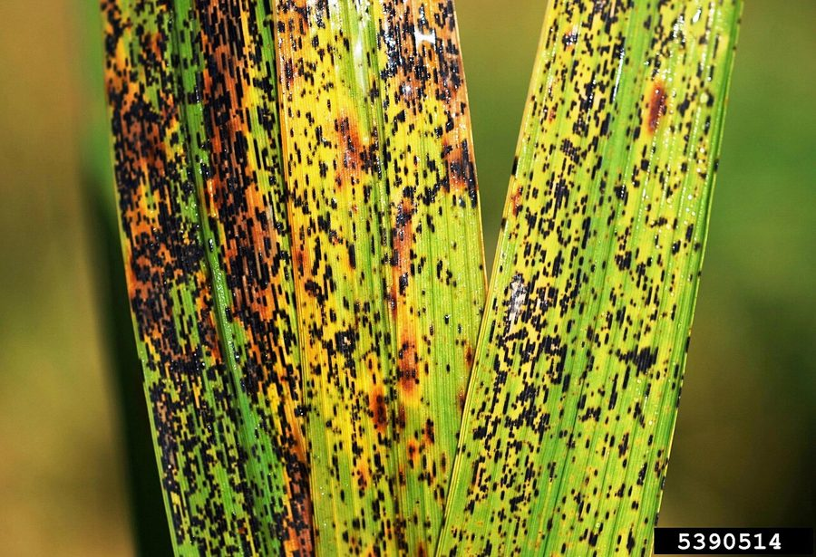

राइस लीफ स्मटRice Leaf Smut
Eballistra oryzae · Eballistraceae · FNG-0045

- Scientific name वैज्ञानिक नाम
- Eballistra oryzae (Syd. & P.Syd.) R.Bauer, Begerow, A.Nagler & Oberw.
- Family कुल
- Eballistraceae
- Hindi हिंदी
- राइस लीफ स्मट
- Local names स्थानीय नाम
- rice leaf smut, dhan parn kandua, dhan patti smut
- Status here यहाँ की स्थिति
- native
- Movement आवागमन
- Resident, here all year
- Known from कहाँ दर्ज
- Others have published records from the wider Awadh–Purvanchal plain, none yet from Basti–Ayodhya अवध–पूर्वांचल से दूसरों के प्रकाशित अभिलेख, बस्ती–अयोध्या से अभी नहीं
- IUCN IUCN
- not evaluated
- Review समीक्षा
- not yet reviewed
When to look कब देखें
Expected mainly in August, September, October, November. मुख्यतः अगस्त, सितंबर, अक्टूबर, नवंबर में अपेक्षित।
Uses and possibilities उपयोग और संभावनाएँ
Drawn from the documented uses in the profile below, where each is labelled traditional, current or a research lead. All uses →
राइस लीफ स्मट / Rice Leaf Smut
Eballistra oryzae (Syd. & P.Syd.) R.Bauer, Begerow, A.Nagler & Oberw. — Eballistraceae
राइस लीफ स्मट — धान की पत्तियों पर नसों के समानांतर काले, चमकदार और चौकोर धब्बे बनाने वाला एक विशिष्ट कवक। खरीफ मौसम के अंत में जब धान की फसल पकने वाली होती है, तब पत्तियों पर सीसे जैसे काले धब्बे उभर आते हैं। ये धब्बे पत्ती की त्वचा के नीचे दबे रहते हैं और छूने पर झड़ते नहीं हैं। अधिक संक्रमण होने पर पत्तियाँ ऊपर से पीली होकर सूखने लगती हैं, जिससे दाने हल्के रह जाते हैं।
Quick Identification त्वरित पहचान
| Feature | Description |
|---|---|
| Lesion appearance | Small, angular to linear black leaden spots embedded in leaf blades |
| Lesion orientation | Oriented strictly parallel to the parallel veins of the rice leaf |
| Epidermal covering | Sori remain firmly covered by host cuticle, appearing glossy and crusted |
| Colour profile | Deep charcoal black with a narrow, pale yellowish chlorotic halo |
| Distribution on plant | Predominantly visible on mature lower and middle foliage near heading stage |
| Rupture behavior | Sori do not rupture into powdery clouds until late host senescence |
| Teliospores | Compactly agglutinated masses of angular to subglobose golden-brown spores |
| Foliar reaction | Leaves turn prematurely yellow from the apex downwards as spots multiply |
Field tip: Examine maturing rice plants around panicle heading in October. Look for glossy, slightly raised, rectangular black crusts neatly arranged in lines along leaf veins; unlike other smuts, these spots remain firm and do not shed black dust when rubbed.
हिंदी — कैसे पहचानें: धान की पकी पत्तियों पर नसों के साथ-साथ काले, चमकदार और चौकोर धब्बे। ये धब्बे पत्ती की सतह के भीतर जमे रहते हैं और छूने पर धूल की तरह नहीं झड़ते।
Morphology आकारिकी
Eballistra oryzae represents a specialized exobasidiomycete historically placed in the genus Entyloma, exhibiting distinct localized vegetative and reproductive morphology:
- Sori: Developing inside the mesophyll of leaf blades and leaf sheaths; small, linear to rectangular, slightly raised, dark leaden grey to pitch black, remaining permanently covered by the host epidermis until late saprotrophic decay.
- Teliospores: Formed in dense, firmly agglutinated masses within intercellular spaces between vascular bundles; individual teliospores are globose, subglobose, or distinctly polyhedral due to mutual compression, pale olivaceous to yellowish-brown, smooth-walled, possessing a moderately thickened two-layered exospore.
- Haustoria: The intercellular mycelium penetrates host parenchymal cells via simple, unbranched or lobed intracellular haustoria without inducing immediate host cell necrosis.
- Germination: Germinates by producing an apical promycelium that bears a whorl of terminal sporidia capable of budding yeast-like phases before generating infectious dikaryotic filaments.
हिंदी: इस कवक के बीजाणु पत्ती की नसों के बीच आपस में कसकर चिपके रहते हैं। दबाव के कारण इनका आकार बहुकोणीय हो जाता है। ये पत्ती की ऊपरी झिल्ली के फटने तक बाहर नहीं आते।
Ecology and Substrate पारिस्थितिकी और आधार
Eballistra oryzae is an ecologically specialized biotrophic parasite restricted to the genus Oryza:
- Primary host: Cultivated paddy (Oryza sativa), attacking traditional tall cultivars and high-yielding semi-dwarf varieties across wet alluvial tracts.
- Wild reservoir: Wild rice (Oryza rufipogon) thriving in permanent jheels, ditches, and marsh margins sustains the fungus during non-cropping months.
- Environmental drivers: Severe foliar expressions correlate with late monsoon warmth, high relative humidity, and excessive late application of nitrogenous fertilizers.
- Residue carryover: Teliospores embedded in fallen rice straw and stubble survive immersion in waterlogged soil, serving as the primary source of inoculum for subsequent nursery and transplanted crops.
हिंदी: यह कवक केवल धान और जंगली तिन्नी धान के पौधों पर जीवित रहता है। बारिश के बाद की गर्मी और देर से यूरिया डालने पर यह तेजी से फैलता है। कटाई के बाद यह खेत में पड़े पुआल और ठूंठ में सुरक्षित रहता है।
Life Cycle / Phenology जीवन चक्र
The fungal phenology is closely synchronized with the wetland rice calendar of northern India:
| Season | Infection Stage | Wetland Agroecosystem Context |
|---|---|---|
| Early Monsoon | Primary infection initiated by sporidia carried in irrigation currents onto young seedlings | Nursery beds and early transplanted paddies establish in standing water |
| Mid-Monsoon | Endophytic colonization progresses slowly inside leaf sheaths and lower blades | Tillering stage; vegetative foliage remains symptomless |
| Late Monsoon | Fungal hyphae aggregate beneath leaf epidermis to differentiate into dark sori | Panicle emergence; glossy black linear spots become clearly visible |
| Post-Monsoon | Infected leaf blades yellow and senesce; sori weather as stubble falls to the ground | Crop harvest; teliospores enter seasonal dormancy inside straw debris |
| Winter / Summer | Teliospore masses survive in dry or flooded paddy soil until the next kharif transplanting | Fallow fields dry out or support non-host rabi crops |
हिंदी: रोपाई के समय सिंचाई के पानी के साथ बीजाणु नए पौधों में प्रवेश करते हैं। शुरू में कोई लक्षण नहीं दिखता, लेकिन बालियाँ निकलते समय पत्तियों पर काले चकत्ते उभर आते हैं। कटाई के बाद यह जमीन पर गिरे पुआल में पड़ा रहता है।
Associated Species and Decay Role सहजीवी प्रजातियाँ और अपघटन
Eballistra oryzae occurs within the diverse microbial and floral community of the Gangetic rice basin:
- Host flora: Attacks Paddy (Oryza sativa) and co-occurs on Wild Rice (Oryza rufipogon).
- Co-occurring pathogens: Regularly found alongside rice blast (Magnaporthe oryzae), sheath blight (Rhizoctonia solani), and brown spot (Bipolaris oryzae) on mature canopies.
- Microbial succession: Sorus tissues accelerate the colonization of dying rice foliage by secondary saprotrophs such as Alternaria and Cladosporium.
- Nutrient dynamics: Contributes to the breakdown of stubborn cellulose and lignin in submerged rice straw during post-harvest flood decomposition.
हिंदी: यह कवक धान और तालों में उगने वाले तिन्नी धान पर आक्रमण करता है। यह पत्ती के पुराने ऊतकों को कमजोर करता है, जिससे अन्य कवक पत्तियों को जल्दी सड़ाकर मिट्टी में मिलाने में मदद करते हैं।
Agricultural / Human Relevance कृषि प्रासंगिकता
Rice leaf smut is a minor to moderate foliar disease that can cause appreciable localized yield losses:
- Fungal sign: Shiny black, linear to rectangular crusts embedded firmly within the green or yellowing leaf lamina.
- Plant symptom: Premature leaf yellowing, drying from the tip, and reduced green leaf duration during grain filling, resulting in a higher proportion of unfilled chaffy grains.
- Cultural management:
- Avoid excessive or late-season applications of chemical nitrogen, which prolong foliar susceptibility.
- Practice balanced soil nutrition with adequate potash to strengthen epidermal cell walls.
- Plough under or compost crop stubble promptly after harvest to encourage microbial decomposition of teliospores.
- Maintain clean field borders by clearing wild rice and grassy weed hosts from irrigation channels.
- Select regionally adapted rice varieties showing tolerance to late-season foliar smuts.
हिंदी: पकी पत्तियों पर काले धब्बे बढ़ने से पत्तियाँ जल्दी सूख जाती हैं और दानों में दूध ठीक से नहीं भर पाता। खेत में जरूरत से ज्यादा यूरिया न डालना, पोटाश का उचित प्रयोग करना और कटाई के बाद खेत की जुताई करना इसके बचाव के उपाय हैं।
Expected Locally स्थानीय रूप से अपेक्षित
Not a field record. Written from published accounts for eastern Uttar Pradesh. No confirmed local sighting yet — if you have seen it, that is what the atlas needs.
अभी तक स्थानीय पुष्टि नहीं। यह विवरण प्रकाशित स्रोतों से है, किसी अवलोकन से नहीं।
GBIF holds published records from the wider Awadh–Purvanchal plain, none yet from Basti–Ayodhya. In Awadh, the fungus is expected in irrigated lowland paddies, low-lying village water basins, and wild rice habitats during late kharif. A confirmed first record requires a clear photograph with place and date submitted through the project portal.
हिंदी: बस्ती और पूर्वांचल के धान के खेतों में फसल पकते समय पत्तियों पर यह कवक देखा जा सकता है। पुष्टि के लिए चमकदार काले धब्बों वाली धान की पत्ती की स्पष्ट तस्वीर भेजें।
Distribution वितरण
Global range: Widespread in rice-growing regions of Asia, Africa, and the Americas.
In India: Recorded across northern and eastern rice belts (Bilgrami et al. 1979).
In Uttar Pradesh: Known from cultivated paddies and wild rice stands in the Gangetic plain.
In Basti district / eastern UP: Expected in irrigated lowland paddies and seasonal wetlands during the late kharif season.
हिंदी: यह कवक एशिया, अफ्रीका और अमेरिका के धान उत्पादक क्षेत्रों में पाया जाता है। उत्तर प्रदेश के धान वाले तराई और मैदानी इलाकों में यह व्यापक रूप से उपस्थित रहता है।
Research Questions शोध प्रश्न
- To what degree do wild rice (Oryza rufipogon) patches around village wetlands maintain inoculum between kharif seasons?
- How does the intensity of leaf smut infection correlate with late-season nitrogen top-dressing across Awadh paddies? / क्या देर से यूरिया डालने पर धान की पत्तियों पर काले कंडुआ धब्बों की सघनता बढ़ जाती है?
- Does the persistence of teliospores in submerged paddy soil decline significantly under zero-till wheat rotations?
- What physiological mechanisms allow Eballistra oryzae to complete development without triggering premature host cell death? / यह कवक बिना पत्ती की कोशिकाओं को तुरंत मारे लंबे समय तक कैसे जीवित रहता है?
- Which predatory or mycophagous mites feed on weathering Eballistra sori in standing post-harvest stubble?
Similar Species मिलती-जुलती प्रजातियाँ
| Species | Primary Host | Sorus Appearance | Spore Agglutination |
|---|---|---|---|
| Eballistra oryzae | Oryza spp. | Linear, rectangular shiny black spots | Firmly agglutinated in compact masses |
| Entyloma dahliae | Dahlia spp. | Pale white to yellowish circular spots | Loosely clustered in leaf mesophyll |
| Bipolaris oryzae | Oryza sativa | Oval brown lesions with grey centres | Free airborne conidia, non-soral |
Field rule: Look for permanent glossy black crusts along leaf veins: non-powdery, rectangular black spots covered by the epidermis identify Eballistra oryzae, distinguishing it from brown spot or powdery smuts.
हिंदी: धान की पत्तियों पर नसों के बीच बने चमकदार काले चौकोर धब्बे जो छूने पर न झड़ें, इस कवक की पहचान हैं। भूरे धब्बे वाले कवक में कोई सख्त पपड़ी नहीं बनती।
Taxonomy & Classification वर्गीकरण
Original description. The species was originally described as Entyloma oryzae by Hans Sydow and Paul Sydow in 1914 and subsequently transferred to Eballistra by Robert Bauer, Dominik Begerow, A. Nagler, and Franz Oberwinkler in 2001 (Mycological Research, 105(4), pp. 416–424).
Subspecies. Monotypic — no subspecies are currently recognised.
Family and order placement. Placed in the family Eballistraceae within the order Georgefischeriales, class Exobasidiomycetes, phylum Basidiomycota.
Phylogenetic notes. Molecular phylogenetic analyses of the Exobasidiomycetes place Eballistra within Georgefischeriales based on ultrastructure of ballistospores and host relationship.
IUCN status rationale. Not evaluated globally by the IUCN Red List. It is a widely distributed agricultural microfungus with an expansive geographical presence and no conservation threats.
हिंदी: इस कवक का वैज्ञानिक वर्गीकरण 2001 में संशोधित कर एबालिस्ट्रा वंश में रखा गया। यह बेसिडिओमाइकोटा प्रभाग का सदस्य है और इसका कोई संरक्षण संकट नहीं है।
Photo Gallery फोटो गैलरी
No photos yet — add field photos to media/species/rice_leaf_smut/ and run node scripts/sync_photos.js.
Photos needed आवश्यक फोटो
- [ ] Maturing rice leaf blade showing rectangular black shiny sori along veins (धान की पत्ती पर काले चमकदार धब्बे)
- [ ] Field-scale view of lower canopy leaf yellowing in an affected paddy crop (खेत में धान की पत्तियों का पीला पड़ना)
- [ ] Microscopic view of agglutinated polyhedral teliospores from crushed leaf sorus (सूक्ष्मदर्शी से जुड़े हुए बीजाणु)
References संदर्भ
- Bauer, R., Begerow, D., Nagler, A. & Oberwinkler, F. (2001). The Georgefischeriales: a phylogenetic hypothesis. Mycological Research, 105(4): 416–424. doi:10.1017/S0953756201003690
- Bilgrami, K. S., Jamaluddin & Rizwi, M. A. (1979). The Fungi of India, Part I. Today & Tomorrow's Printers & Publishers, New Delhi.
- GBIF Occurrence Data — Eballistra oryzae, India (2025).
Source file: species/fungi/molds/rice_leaf_smut.md